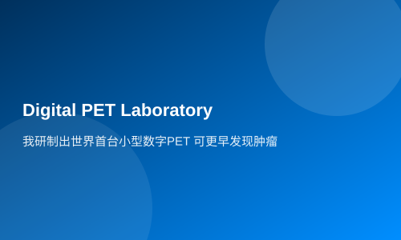

I developed the world's first small digital PET to detect tumors earlier
BEIJING, April 9 -- (Reporter Jiang Jianke) Professor Xie Qingguo from the Department of Biomedical Photonics at Wuhan National Laboratory for Optoelectronics (WNLFO), and a professor at Huazhong University of Science and Technology's School of Life Sciences, led his research team to solve the world challenge of fully digitalizing PET. This breakthrough means that tumors can be detected earlier and more accurately, aiding in cancer diagnosis and benefiting humanity. A panel of experts including Academician Yu Mengsun from the Chinese Academy of Engineering has appraised this technology as reaching international leading levels.
The Positron Emission Tomography (PET) scanner is one of today's advanced medical imaging technologies following ultrasound, CT, and magnetic resonance imaging, and it has become one of the best tools for early diagnosis and guiding cancer treatment. However, due to technical bottlenecks in digitizing ultra-high-speed scintillation pulses, PET had previously been unable to achieve full digitalization; only analog and hybrid analog-digital machines were available. In response to this global challenge, Xie Qingguo's team innovatively proposed the 'multi-voltage threshold sampling method', accurately achieving precise digitalization of high-speed scintillation pulses, developing fully digitalized PET detectors and the world's first small-scale digital PET machine.